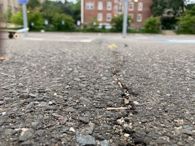
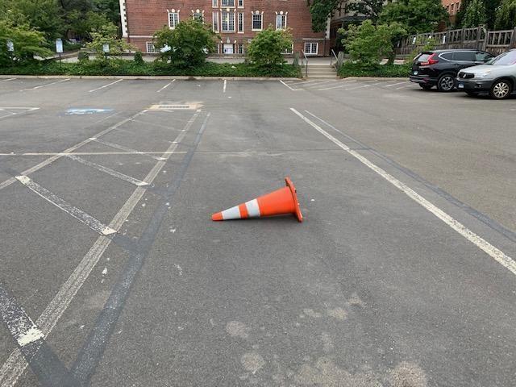

My Favorite features
The Crack
The crack’s purpose is just in its name. It is a small crack that runs along the center of the lot in between two parking spots. The crack is perfect for working on any trick that doesn’t require movement. Anything from Ollies to practicing stationary manual are perfect on the crack because it braces your back wheels just enough that the board doesn’t move without keeping too strong of a grip on it.
Cones and Boards
The spaciousness of the lot also allows for the ability to create your own obstacles and structures. You can find long wooden boards close to the lot thanks to the construction going on behind slifka. You can use this to practice your Ollies and also rolling off curbs. Just make sure to put it back! You will also find random cones scattered around the lot to create structures of whatever height to practice your Ollies and hippy jumps.
 Previous page Flip page